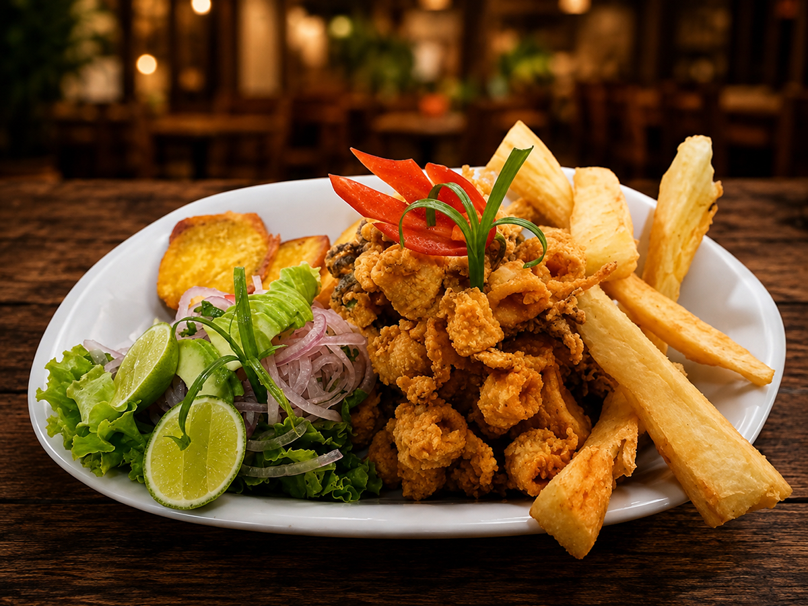
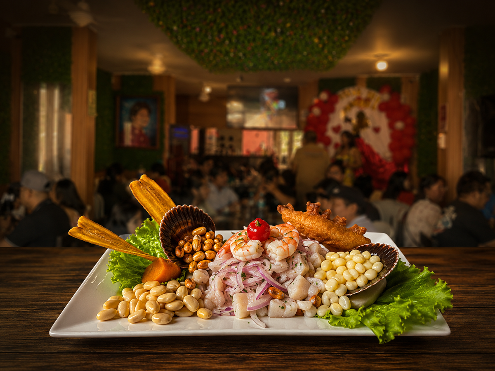
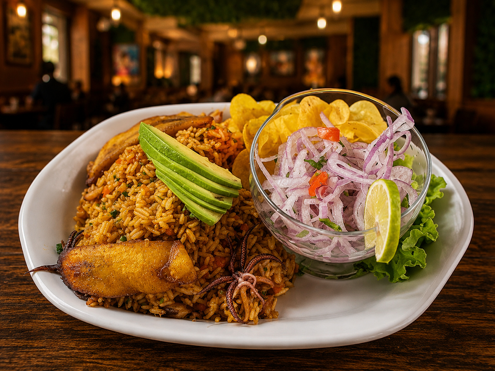
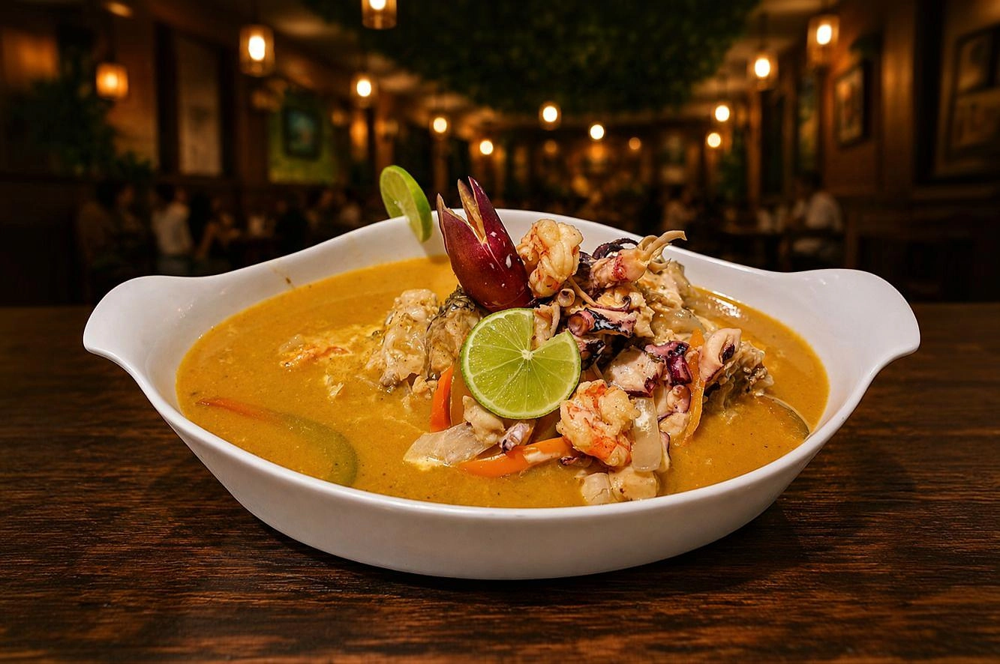
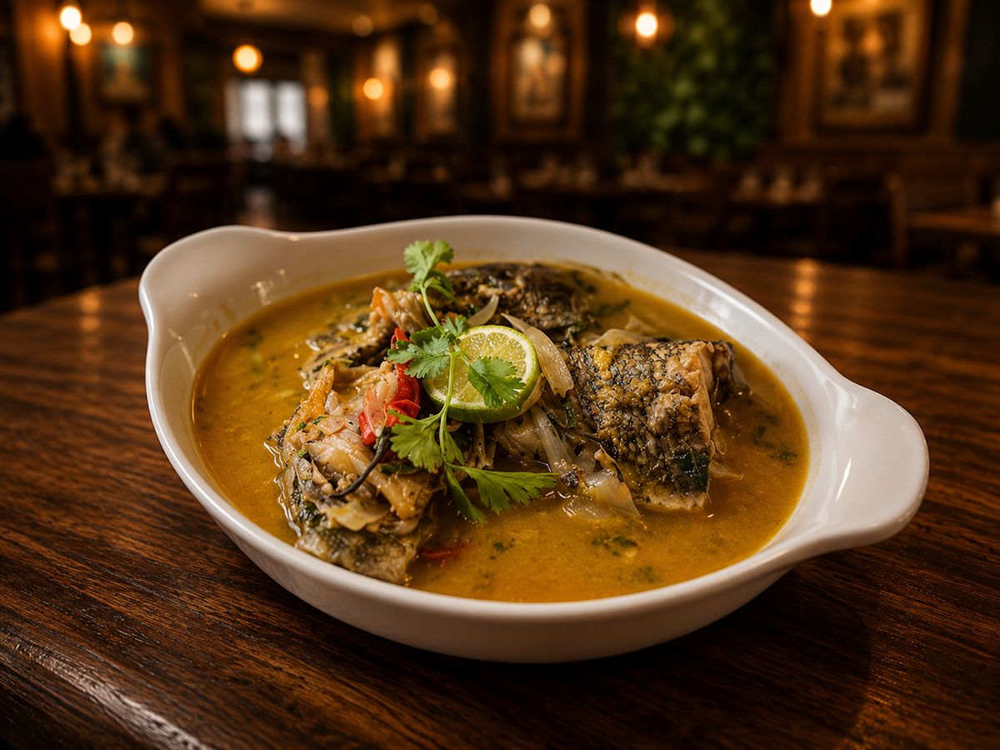
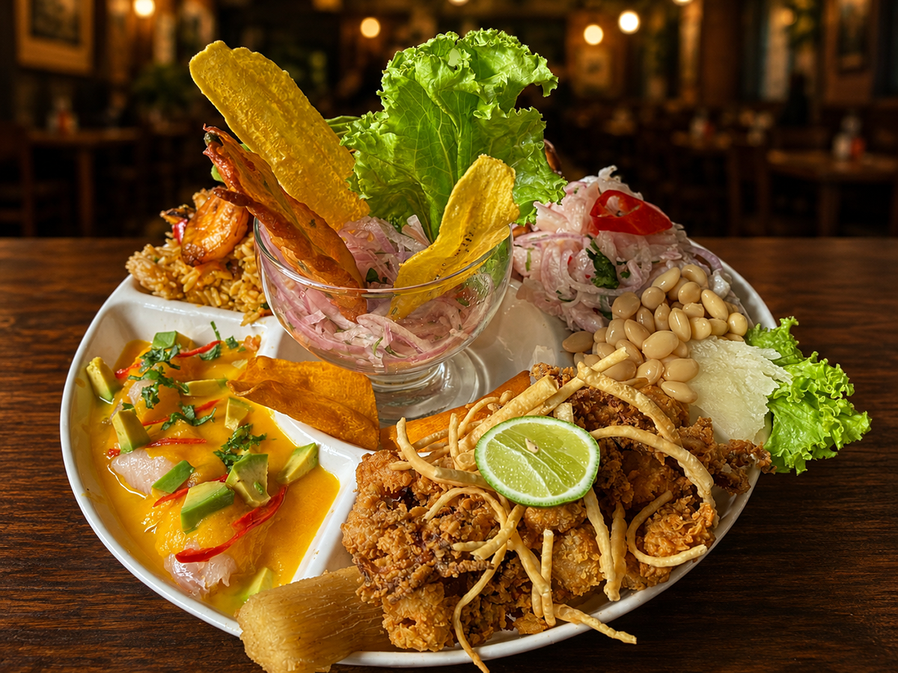

El mejor ambiente familiar
Desde 1977, el legado continúa.
Con la auténtica sazón y el rico sabor que ya conoces.
En 1977 nace un sueño que hoy continúa vivo. Doña Cristina María Bayona Coveñas inició este hermoso proyecto con esfuerzo, dedicación y el apoyo de sus hijos, convirtiendo a la Picantería Virgen del Carmen en uno de los restaurantes más representativos de La Unión, Piura.
Durante casi cinco décadas hemos compartido momentos especiales con miles de familias, ofreciendo la auténtica cocina norteña, siempre preparada con productos frescos y el sabor tradicional que nos caracteriza.
Años de tradición
Familias atendidas
Sirviendo con amor
Los sabores que han conquistado a generaciones.

Crujientes trozos de calamar acompañados de yuca frita y ensalada criolla.
S/ 45.00 Pedir por WhatsApp
Pescado fresco marinado en limón, acompañado de camote, cancha y choclo.
S/ 45.00 Pedir por WhatsApp
Delicioso arroz preparado con mariscos frescos y el sabor especial de la casa.
S/ 45.00 Pedir por WhatsApp
Concentrado marino preparado con cabrillón y mariscos frescos.
S/ 75.00 Pedir por WhatsApp
Preparado lentamente con tomate, cebolla y el auténtico sabor norteño.
S/ 65.00 Pedir por WhatsApp
Nuestra especialidad con una exquisita combinación de sabores del mar.
S/ 85.00 Pedir por WhatsApp